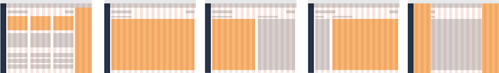
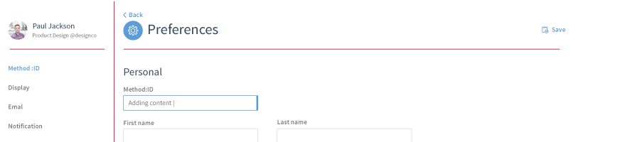

App Layouts
Example of consistant layout structures

Borders And Separators
Example of consistant borders as seperators

- 1. Avoid conflicting views on the same page
- Ensure Method is not too over-cluttered with the many different variations of layout patterns. A page consists of a set of views, and the layouts should allow users to do things quickly within the environment but not feel as though any of the views are interfering with focus or that they’re jumping too much between disconnected contexts.
- 2. Functional seperations
- Aligning functional separations helps us avoid conflict between separate groups of elements on the same page. These sepeprations of content should not be only aesthetic, but visually support and reinforce layout patterns.
- 3. Focus on the logical structuring of content
- Proactively being able to attain and assemble information in a structured way that leads to product and design decisions (needs example expansions).
- 4. Respect the layout grid
- In order to remove bias from decision making on consistancy and layout, respect the patterns for the grid layout, as well as the vertical spacing dimensions enforced throughout the Method Style Guide.